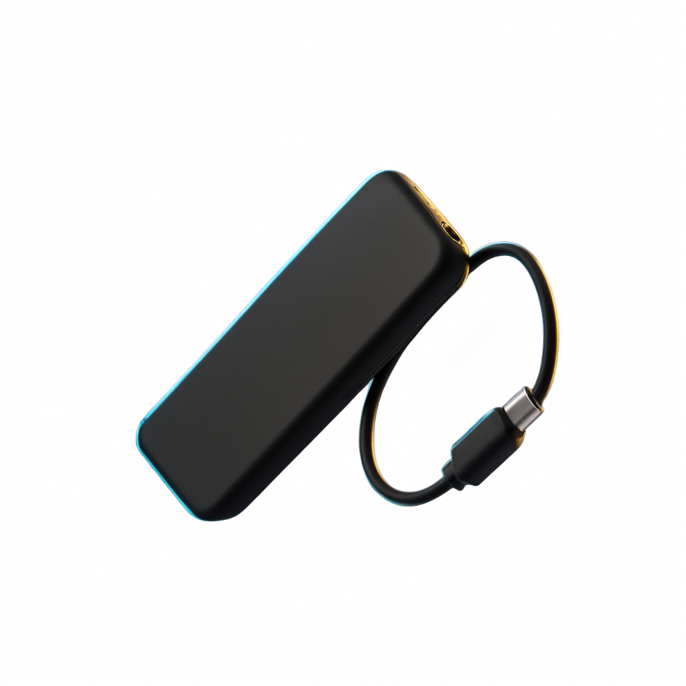

It hears the drive arrive
A LaunchAgent watches /Volumes. Plug the player in and the job
starts on its own — no menu bar app, no window, no clicking.
Shokz Auto-Fill watches for your player. The moment it appears, it pulls a brand-new random set of songs from your own Navidrome server, keeps the two newest lists, and ejects the drive for you.
A LaunchAgent watches /Volumes. Plug the player in and the job
starts on its own — no menu bar app, no window, no clicking.
Fifty songs by default, chosen at random from everything on your server, written into a new numbered folder on the player.
The two newest lists stay; older ones are cleared out. Then the drive is ejected, so you can unplug it and go.
This is the entire user experience. There is no fourth step, and no interface to learn.

Any player that mounts as a USB drive under /Volumes —
a Shokz OpenSwim, an old iPod in disk mode, a cheap clip-on MP3 player. The job
waits two seconds for macOS to finish mounting, then looks for the volume by name.

It asks your Navidrome server for random songs, downloads them
into a new folder (auto-list/1, auto-list/2, …), and numbers
every track so the player plays them in the order you got them.
Old lists beyond the two newest are removed, the filesystem is
synced, and the volume is ejected with diskutil. Unplug it and put it
on. Tomorrow's plug-in is a different fifty songs.


It was written for a Shokz OpenSwim, and it works with the OpenSwim Pro, older Aftershokz players, most clip-on MP3 players, and anything else Finder shows you as a removable volume.
The only requirement is that the player appears as a folder under
/Volumes and is formatted FAT32 or exFAT. If you can drag an MP3 onto it in
Finder and the player plays it, this tool can fill it.
No phone, no companion app, no account, no proprietary transfer software. The player just has to look like a USB stick — which, to your Mac, is exactly what it is.
Copying files onto a USB stick is trivial. Doing it from a background job on modern macOS is not.
macOS gates removable volumes behind a privacy service. When a background job runs
/bin/bash, bash is the responsible process — and /bin/bash
is an Apple platform binary. macOS will not grant those a permission,
and cannot even ask. The refusal is permanent and completely silent: every
mkdir on the drive fails with Operation not permitted, and nothing
tells you why.
The fix is to run the job under a shell that is not a platform binary, so macOS
will put up a dialog and then grant it. That is the entire reason
install.command installs a Homebrew bash, and the reason it walks
you through one Allow prompt.
--- Script started at Tue 14 Oct 07:12:04 BST --- Using Navidrome via http://navidrome.local:4533 Fetching 50 random songs from Navidrome... Got 50 song id(s). Downloading to /Volumes/MY_PLAYER/auto-list/7... Downloaded file count in /Volumes/MY_PLAYER/auto-list/7: 50 Cleaning up old lists (keeping 2 newest)... Removing 5 Syncing and ejecting... "MY_PLAYER" ejected.
Your music lives on your Navidrome server. This tool talks to that server and to the drive in front of you. There is no account, no telemetry, no analytics, no update check, and no third party anywhere in the path. The whole thing is a shell script you can read in one sitting.
The password prompt does not echo — not even dots. It is stored in
~/.config/shokz-auto-fill/config at mode 600 (only your user can
read it), and it is never printed, never logged, and never written into the installer's log
file. Requests to Navidrome use a salted token instead.
Clean-up only touches the numbered folders this tool created inside
auto-list/, and only the ones past the newest two. If it cannot download
anything at all, it aborts and leaves the drive exactly as it found it.
The installer, the fill script and the test suite are all in the public repository. Nothing is downloaded at install time, and nothing in the repo is obfuscated or minified.
There is a much longer list on the FAQ page.
All questions.command file?It is a plain text file full of shell commands that macOS opens in Terminal when you
double-click it. The .command extension is the only thing that makes Finder
run it instead of showing it to you in a text editor. You can open
install.command in TextEdit and read every line before you run it — and you
probably should.
You shouldn't, on the strength of a web page. You should trust it because you read
it. It is about 700 lines of commented shell across four files, it is not minified, it
has no network calls except to the Navidrome server you name yourself, and it installs
nothing except a Homebrew bash and jq.
If you would rather not hand over your real password, make a second Navidrome account for this and use that. It only ever needs permission to read your library.
No. Two things are contacted: your Navidrome server, to fetch songs, and the USB drive in front of you, to write them. There is no phone-home, no crash reporting, no usage analytics and no auto-update.
It tries each URL you configured, in order. If none of them answer it aborts, writes the reason to its log, and leaves the existing music on the player untouched. It will not create an empty folder and it will not clear out your old lists.
Two minutes to install, one Allow dialog, and then you never think about it again.